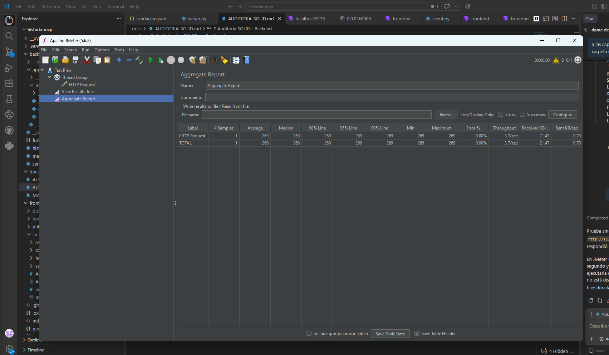
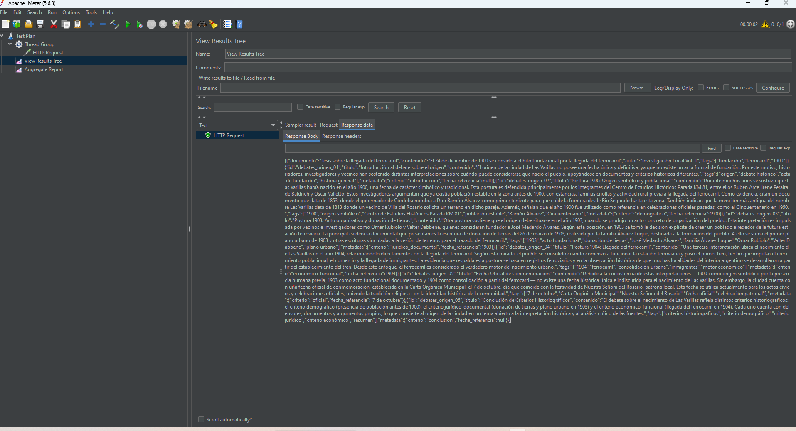
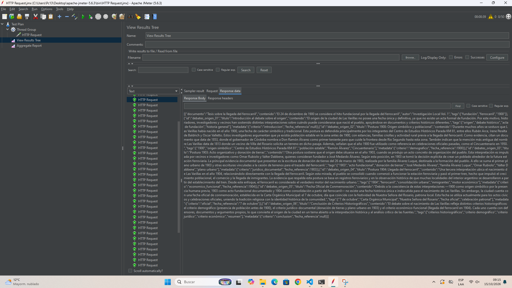
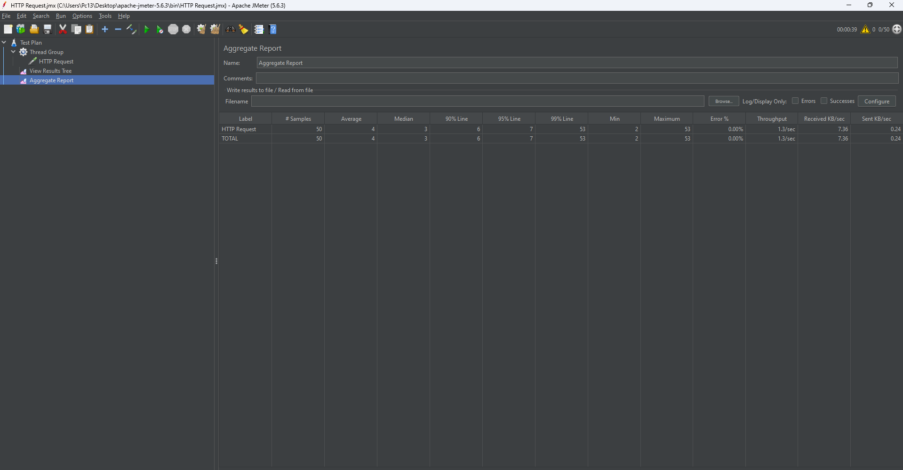
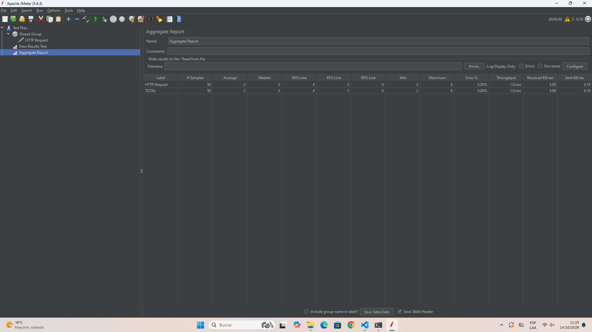
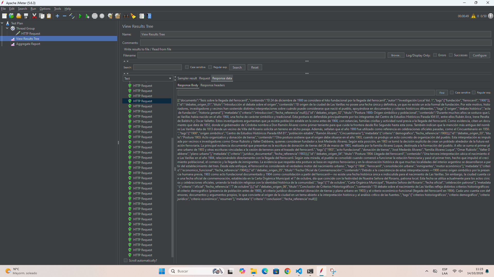

Este informe organiza la evidencia disponible de Apache JMeter para tres tipos de prueba: smoke, carga y estrés. El objetivo es comprobar la respuesta del servicio y observar cómo cambian los tiempos y los errores al aumentar el volumen de solicitudes.
| Tipo | Configuración observable | Resultado principal | Lectura |
|---|---|---|---|
| Smoke | 1 usuario; 1 iteración | 1 muestra; promedio 269 ms; 0.00 % de errores | Verificación funcional básica satisfactoria |
| Carga | 50 muestras; la interfaz muestra 50 hilos | Promedio 4 ms; 0.00 % de errores; máximo 53 ms | Resultado favorable en el volumen observado |
| Estrés | 10,000 hilos; 30,000 muestras | Promedio 1,137 ms; 51.25 % de errores | Degradación importante bajo carga extrema |
Validar la disponibilidad del endpoint de consulta y medir latencia, percentiles, throughput y porcentaje de errores en tres niveles de exigencia.
| Sistema bajo prueba | API backend del proyecto MPC Club de Ciencia |
|---|---|
| Ruta | http://127.0.0.1:8000/api/fundacion |
| Método | HTTP GET |
| Respuesta esperada | Registros de la fundación en formato JSON |
| Herramienta / versión | Apache JMeter 5.6.3 (visible en las capturas) |
| Listeners solicitados | Aggregate Report (Informe agregado) y View Results Tree (Árbol de resultados) |
Las capturas de evidencia están guardadas en docs/capturas_GET. Los datos numéricos que no se visualizan claramente en la evidencia se reportan como “no verificable” en lugar de asumir valores.
| Tipo de prueba | Smoke |
|---|---|
| Ruta | /api/fundacion |
| Método | GET |
| Usuarios (hilos) | 1 |
| Ramp-up | 1 segundo |
| Iteraciones | 1 |
| Rendimiento | Una muestra; tiempo de respuesta 269 ms; throughput observado 3.7 solicitudes/s |
| Resultado | 1 muestra; 0.00 % de errores |
La prueba smoke usa un único usuario y una única iteración: su propósito es comprobar rápidamente que el endpoint responde. La muestra registrada terminó en 269 ms, sin errores, y el árbol de resultados muestra el JSON recibido.


| Tipo de prueba | Carga |
|---|---|
| Ruta | /api/fundacion |
| Método | GET |
| Usuarios (hilos) | 50, según indicador visible en la evidencia asociada |
| Ramp-up | No verificable en las capturas |
| Iteraciones | 50 muestras totales; aproximadamente 1 por hilo (estimado) |
| Rendimiento | Promedio 4 ms; mediana 3 ms; p90 6 ms; p95 7 ms; p99 53 ms; mínimo 2 ms; máximo 53 ms; throughput 1.3 solicitudes/s |
| Resultado | 50 muestras; 0.00 % de errores |
En el volumen documentado, la respuesta se mantuvo sin errores y con una latencia media de 4 ms. El máximo de 53 ms y el percentil 99 de 53 ms muestran algunas respuestas más lentas que la mediana, aunque no fallidas.


| Tipo de prueba | Estrés |
|---|---|
| Ruta | /api/fundacion |
| Método | GET |
| Usuarios (hilos) | 10,000, según indicador visible en JMeter |
| Ramp-up | No verificable en la captura |
| Iteraciones | 30,000 muestras; aproximadamente 3 por hilo si hubo un sampler por iteración (inferencia) |
| Rendimiento | Promedio 1,137 ms; mediana 1,458 ms; p90 2,057 ms; p95 2,262 ms; p99 2,853 ms; mínimo 1 ms; máximo 4,201 ms; throughput 1,304.9 solicitudes/s |
| Resultado | 30,000 muestras; 51.25 % de errores |
La ejecución de estrés presenta un deterioro claro: más de la mitad de las muestras fallaron y los percentiles de latencia se elevaron a segundos. Aunque el throughput informado es alto, debe interpretarse junto al 51.25 % de errores; el volumen procesado no representa respuestas exitosas.


El endpoint respondió correctamente en la muestra registrada: 1 usuario, 1 iteración y 0 % de errores. La duración de 269 ms permite confirmar la respuesta funcional básica en el entorno y momento capturados; no pretende medir capacidad concurrente.
Con 50 muestras, el informe agregado no registra errores y presenta una media de 4 ms. Es un resultado favorable para el volumen medido. No permite, por sí solo, afirmar capacidad para una carga sostenida mayor: la duración, el ramp-up real, la configuración exacta del grupo de hilos y las condiciones del equipo no son verificables en las capturas.
La corrida de 10,000 hilos alcanzó 30,000 muestras, pero registró un 51.25 % de errores y un p95 de 2,262 ms. Esto indica que el sistema no sostuvo esa carga extrema de forma confiable. El throughput de 1,304.9 solicitudes/s debe leerse con cautela debido a la elevada tasa de fallos. La evidencia no basta para atribuir la causa a un componente concreto (API, dependencias, servidor de prueba o entorno).